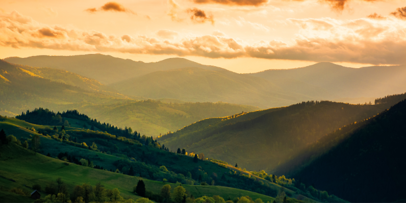
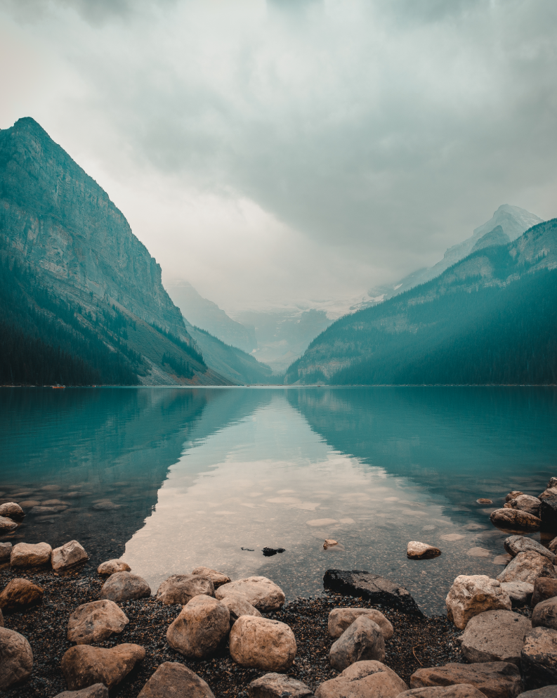
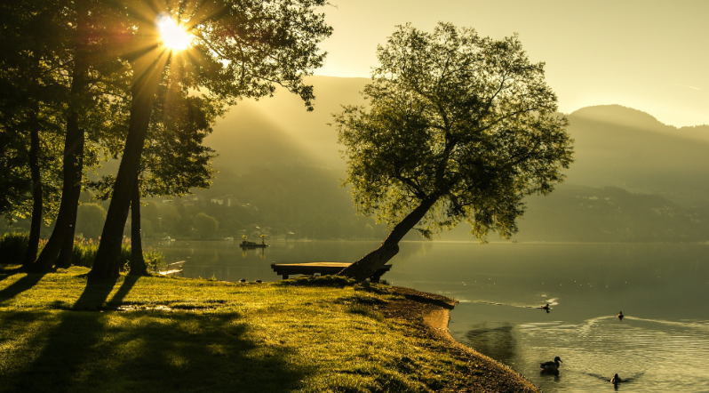
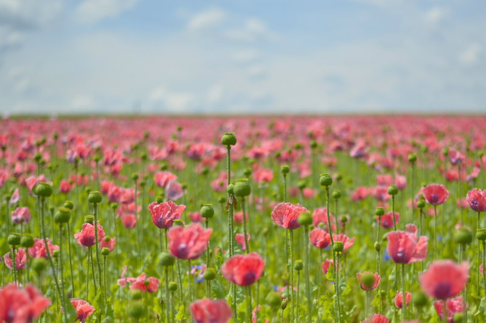

In questa stupefacente immagine, lo sguardo viene catturato dall'incantevole
maestosità di un paesaggio montano. Le vette imponenti delle montagne si ergono fieramente contro il
cielo azzurro, mentre le loro cime innevate si perdono tra le nuvole che danzano leggere tra i
picchi. La luce del sole bacia dolcemente le pendici scoscese, creando giochi di luce e ombra che
dipingono un quadro di profonda bellezza e tranquillità. In lontananza, laghi cristallini riflettono
il riflesso delle vette circostanti, aggiungendo un tocco di serenità al panorama mozzafiato. In
questa foto, il fotografo cattura l'essenza stessa della grandezza e della magnificenza della
natura, invitando lo spettatore a immergersi nella meraviglia senza tempo delle montagne.

In questa straordinaria immagine, la maestosità delle montagne si fonde
armoniosamente con la serenità di un lago cristallino, creando un panorama di assoluta bellezza e
suggestione. Le imponenti vette delle montagne si ergono con fierezza contro il cielo, mentre il
lago, placido e luminoso, riflette la loro grandiosità con una purezza cristallina. Le acque
trasparenti del lago catturano i riflessi del cielo e delle montagne circostanti, creando
un'atmosfera di incanto e magia. La quiete e la serenità del paesaggio trasmettono una sensazione di
pace e armonia, invitando lo spettatore a immergersi nella bellezza mozzafiato della natura
circostante. In questa foto, il fotografo cattura con maestria la perfetta simbiosi tra la grandezza
delle montagne e la tranquillità del lago, regalando uno spettacolo visivo di rara intensità ed
emozione.

In questa suggestiva immagine, il paesaggio di montagna si manifesta come un
dipinto di rara bellezza e poesia. Al centro della scena, una solitaria panchina di legno si erge
maestosa, offrendo un luogo privilegiato per contemplare la magnificenza del panorama circostante.
Accanto alla panchina, un possente albero inclinato sembra protendersi verso il lago scintillante
che giace ai suoi piedi, creando un'atmosfera di armonia e connessione con la natura. Le vette delle
montagne, imponenti e maestose, si riflettono sulle acque cristalline del lago, creando un'immagine
di profonda serenità e meraviglia. La luce del sole, filtrando attraverso le fronde degli alberi e
giocando sulle superfici dell'acqua, aggiunge una nota di magia e mistero al paesaggio circostante.
In questa foto, il fotografo cattura con maestria l'essenza della quiete e della bellezza della
natura, invitando lo spettatore a immergersi in un momento di pace e contemplazione nell'abbraccio
delle montagne.

In questa commovente immagine, la natura si esprime in tutta la sua bellezza e
delicatezza attraverso un prato dipinto di rosso dai vividi petali dei papaveri. Ogni fiore si
staglia con eleganza contro il verde brillante del prato, creando un contrasto cromatico che rapisce
lo sguardo e nutre l'anima. Il soffice manto di petali, mosso dalla brezza leggera, sembra danzare
in armonia con il vento, regalando al paesaggio un senso di movimento e vitalità. L'aria è pervasa
dal dolce profumo dei fiori, mentre le ali delle farfalle e il canto degli uccelli completano la
sinfonia della natura. In questa foto, il fotografo cattura con maestria l'incanto e la poesia di un
momento fugace nella vita di un prato in fiore, invitando lo spettatore a immergersi in un mondo di
bellezza e meraviglia.